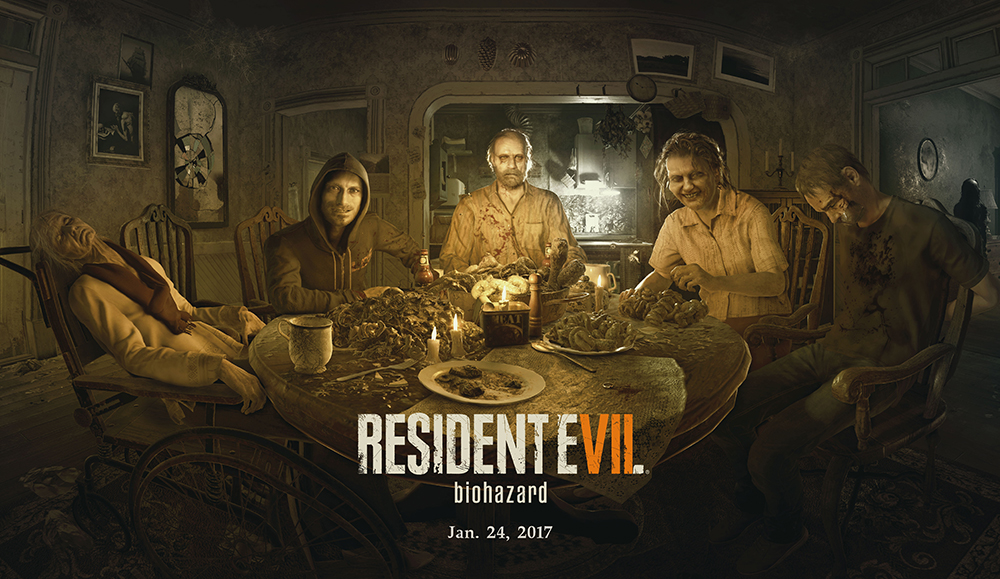
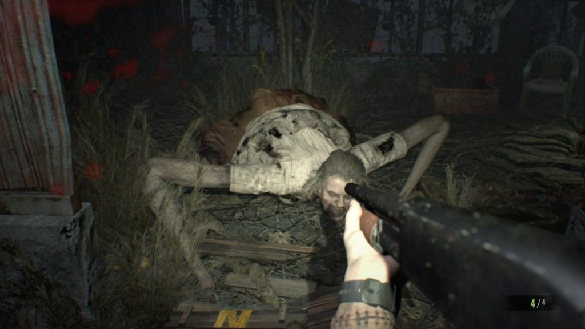
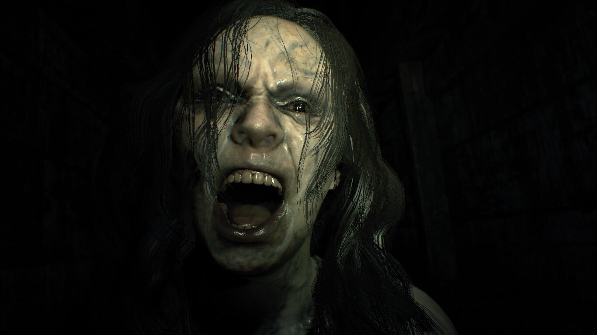

Visão geral

Resident Evil 7: Biohazard marca o retorno da franquia ao terror mais intimista e psicológico. O jogo introduz um novo protagonista, Ethan Winters, um cidadão comum em busca de sua esposa desaparecida, Mia.
A jornada o leva até uma fazenda isolada na Lousiana, dominada pela perturbadora família Baker.
Gameplay e perspectiva em primeira pessoa
A maior mudança está na perspectiva: pela primeira vez na série principal, o jogo é totalmente em primeira pessoa.
- Exploração lenta e tensa;
- Recursos limitados e foco em sobrevivência;
- Ambientes fechados, claustrofóbicos e cheios de segredos;
- Encontros brutais com membros da família Baker.
A combinação de gráficos realistas com a RE Engine e o uso de som ambiente fazem com que cada corredor pareça ameaçador.
História e atmosfera
No início, o jogo parece uma história de terror “doméstico”, com a família Baker agindo de forma insana e violenta. Aos poucos, as ligações com o universo de Resident Evil vão sendo reveladas, conectando o jogo ao bioterrorismo.
A atmosfera é pesada, com muito gore, tensão psicológica e momentos de perseguição que lembram filmes de terror.
Análise
Resident Evil 7 foi visto como uma “salvação” da franquia após as críticas a RE6. Ele trouxe de volta a sensação de vulnerabilidade e medo, ao mesmo tempo em que introduziu um novo estilo.
A recepção foi bastante positiva, elogiando principalmente o clima, a construção da casa dos Baker e o uso da primeira pessoa.
Vendas aproximadas: cerca de 14 milhões de cópias.
Impacto: revitalizou a série e inaugurou a trilogia moderna com a RE Engine.
Curiosidades
- O jogo teve suporte a VR (realidade virtual) em algumas plataformas.
- A demo “Beginning Hour” chamou muita atenção antes do lançamento.
- Conectou-se à série com aparições e revelações mais para o final.
Galeria de imagens


